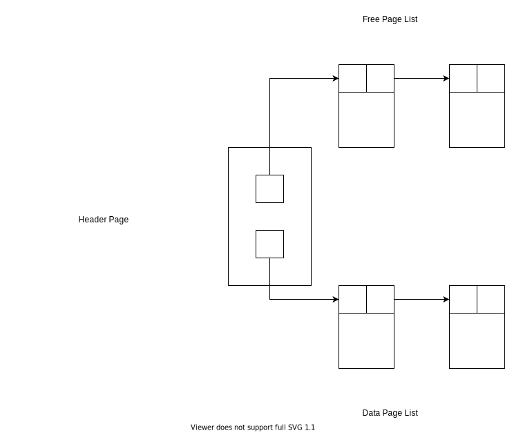

Day04
今回はRDBMSのStorageの仕組みについて説明をしていきます｡
Storage
前回の繰り返しとなりますが､RDBMSはnon-volatile(ストレージ)にあるデータをvolatile(メモリ､キャッシュ)において､操作します｡
non-volatileとvolatileを比較すると前者は容量は大きいですがアクセス速度は遅く､後者は容量は小さいですがアクセス速度は早いです｡また､non-volatileな記憶領域がテープ式の場合､テープ上で連続してデータが配置されている方がランダムに配置されている場合よりもアクセス速度が早いです｡そのため､これらを考慮する必要があります｡
メモリ上でのデータの展開はOSがやってくれる部分もありますが､連続した領域に配置するなど細かいものはRDBMS側でやる必要があります｡
File
Page
RDBMSではDBのfileを扱います｡その際にfileはpageの集まりとして管理されます｡
pageはデータの固定長ブロックで以下の要素を含みます｡
meta-dataindexlog record
Tuple-oriented
Tuple-orientedというPageの構成について紹介します｡
それぞれのpageは一意の識別子を持ちます｡また､Headerとして様々なデータが格納され､Tuple(行ごとのデータ)は以下のようにオブジェクトのメモリの先頭からSlotと呼ばれるTupleを指すポインタが格納され､メモリの末尾にTupleが格納されます｡ただし､Tupleは固定長のデータです｡そして､Tupleには一意なrecord identifierが付与されています｡
これによって削除､追加の際に効率的にメモリを使うことができます｡

Page manipulation
追加時は以下のようになります｡

削除の際は以下の通り｡Tupleは後ろに詰められます｡

Heap
heap fileとは順序不同のpageの集まりです｡tupleがランダムに格納されています｡そして､pageはCREATE・GET・WRITE・DELETEがされ､全てのpageを走査することも可能です｡
heapを表現する方法はLinked ListとPage Directoryの2種類があります｡
Linked List
Linked Listは下図のようにHeader Page・Free Page List・Data Page Listの3つの要素から構成されています｡
Header PageはFree Page ListとData Page Listの先頭のノードへのポインタを持ち､Free Page Listはデータの入っていないPageの単方向連結リスト､Data Page Listはデータの入っているPageの単方向連結リストです｡

Page Directory
この方法は以下のようにHeader Pageが連結リストになっていて､Pageを指すという方法です｡自作RDBMSではこちらは採用しません｡

今回のまとめ
Pageという単位でRDBMSはファイルを扱うPageを扱うために2種類の方法があるが､自作RDBMSではLinked Listという方法を使う
次回予告
- MUST: Storageの説明を終わらせる
- SHOULD: 実装も終わらせる